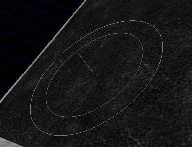
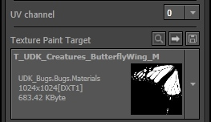
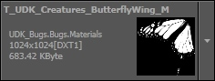
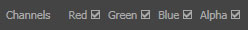

UDN
Search public documentation:
TexturePaintReferenceCH
English Translation
日本語訳
한국어
Interested in the Unreal Engine?
Visit the Unreal Technology site.
Looking for jobs and company info?
Check out the Epic games site.
Questions about support via UDN?
Contact the UDN Staff
日本語訳
한국어
Interested in the Unreal Engine?
Visit the Unreal Technology site.
Looking for jobs and company info?
Check out the Epic games site.
Questions about support via UDN?
Contact the UDN Staff
贴图描画参考指南
概述

快速指南
- 开启贴图描画模式，选中您的网格actor
- 请确认分配给您网格的材质是用于您所要描绘的贴图上
- 选择您需要的UV通道和您所要描画的材质
- 设置您的描绘颜色，然后大致调整其他画刷属性
- 在按下Ctrl键的同时，点击并拖拽您的网格并描画！
贴图描画模式
 然后切换位于工具面板顶部的录音机按钮至_Textures_(贴图）
某些编辑器特点在此模式下不可用，给绘图操作带来不便。但大多常用的编辑器功能，如照相机移动和选项还是可以使用的。同样，您会注意到，您的透视窗口会被强制进入 real-time mode(实时模式) ,这是系统要求的。
然后切换位于工具面板顶部的录音机按钮至_Textures_(贴图）
某些编辑器特点在此模式下不可用，给绘图操作带来不便。但大多常用的编辑器功能，如照相机移动和选项还是可以使用的。同样，您会注意到，您的透视窗口会被强制进入 real-time mode(实时模式) ,这是系统要求的。
在网格上描画

您可以把描画画刷想象为沿着网格物体几何体的表面法线进行投射的圆柱体，该圆柱体的中心是您鼠标下面的网格物体上的点。圆形的画刷轮廓为您显示了画刷的半径。内部的圆圈显示了画刷的 falloff(衰减) (或内半径)。从画刷中心延伸出来的小线是网格表面的法线。 要想进行描画，请 按下Ctrl键 ，然后在网格物体的表面上点击并拖拽。您也可以按住*Shift 键*抹去。 每次在您点击时描绘会在表面进行，同样，每当鼠标位置发生变化（拖曳）时也会进行描绘。同时，如果启用了 brush flow(流动画刷) 功能，描画将会在每次渲染场景时进行应用。 注意您仅能在透视口窗口中进行描画。描画目标
当您切换至贴图描绘模式并选中了运用2D贴图对象的actor时，您会看到如下当前选项：
| 目标 | 描述 |
|---|---|
 | 包括您当前actor选项中可用的UV通道。在此所选的UV设置会被运用到在贴图描绘目标组合框中,您所选中要描绘的贴图上。 |
|  | 这一组合框会包括一系列在您当前actor选项中的贴图（2D贴图）。用此组合框选择您要描绘的贴图。任何标记为法线地图的贴图将不会显示在可描绘贴图列表中。 |
| 快速通道 | 描述 |
|---|---|
| 会让您方便地在浏览器中找到您的贴图选项 (Ctrl + Shift + T). | |
| 您在描绘时，您正在修改贴图源。通过合理的贴图压缩，您的Mipmap优化和缩略图更新随即就会完成。 (Ctrl + Shift + C). 如果您忘记了最后一步，也无须担心。当您退出工具时，系统会自动保存修改的贴图。 | |
 | 会让您保存包含现有所选贴图的包。 |
描画颜色
贴图描画模式能让您在网格上直接描绘色彩数据（红、绿、蓝），且这一色彩数据将绘制到您选中，并运用UV设置的目标贴图上。当您的材质被配置同贴图色彩数据和您的像素着色，以某种有趣的方式结合时，这一模式很有用。| 选项 | 描述 |
|---|---|
 | 该色彩会在描绘时应用(Ctrl + LMB + Drag)。 预览当前色彩的样本。 此色彩通过使用工具内置的[[色彩选择器]来设置。 |
 | 该色彩在抹去时会充当您的“抹去器” (Ctrl + Shift + LMB + Drag). 预览当前色彩的样本。 此色彩通过使用工具内置的[[色彩选择器]来设置。 |
 | 替换*描绘色* 并*抹去色彩*. |
|  | 这些色彩/alpha通道的复选框应根据画刷变化。 |
画刷设置
该选项描述了不同的画刷设置。注意，对于使用滑块控制的选项，您可以通过点击并拖拽它来快速地改变值，或者您可以根据需要点击它并输入数值。
| 设置 | 描述 |
|---|---|
| Radius(半径) | 画刷的半径，以Unreal单位为单位。另外，画刷的深度偏移值是这个半径的一半。 |
| Strength(强度) | 当描绘功能可用的情况下，每当您点击或移动鼠标光标时，可以设置需要描画的数量。同样，如果启用了_brush flow(流动画刷)_ ，它是指应用到表面的画刷力度的百分比量(流动量)。 |
| Falloff (衰减) | 设置画刷力度怎样随着距离衰减而变化。衰减值为1.0意味着画刷的中心是100%的力度，然后沿着画刷的半径进行线性衰减。衰减值为0.5意味画刷半径的一半内的画刷强度为100%，然后线性地进行衰减。衰减值为0.0意味着画刷在整个半径上的力度都为100%。注意，不论该设置是什么，_depth-based falloff(深度偏移)_ 都将处于激活状态。 |
| Enable brush flow(启用画刷流动描画) | 这个选项配置画刷在每个单独的渲染帧中进行描画着色，即使当您没有移动光标时也是这样。它产生的效果和油漆喷雾器的效果类似。 |
| Flow amount(流动画刷强度系数) | 当 Enable brush flow(启用流动画刷) 时，这个值设置了对每次渲染帧进行描画着色时所使用的画刷的力度，它是画刷力度的百分比值。 |
设置材质